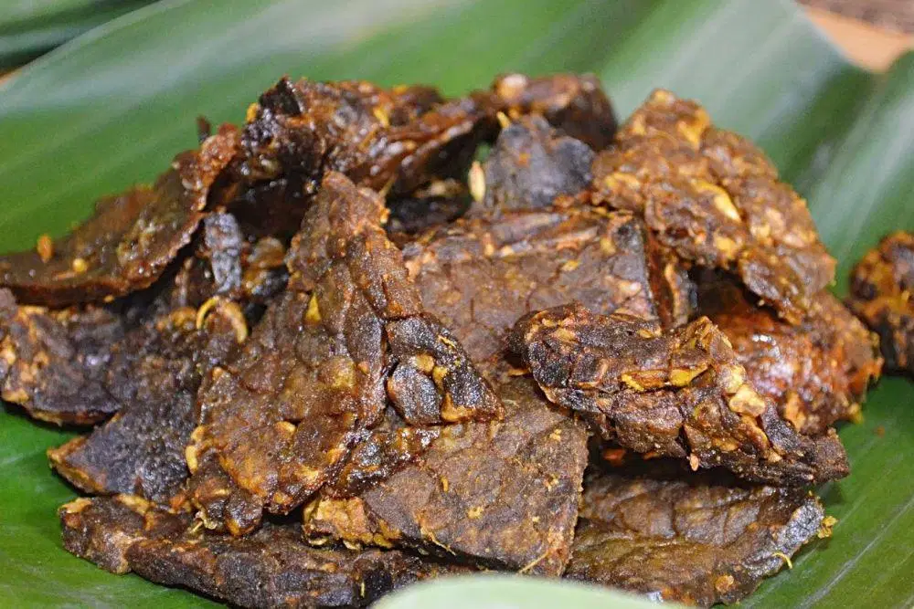
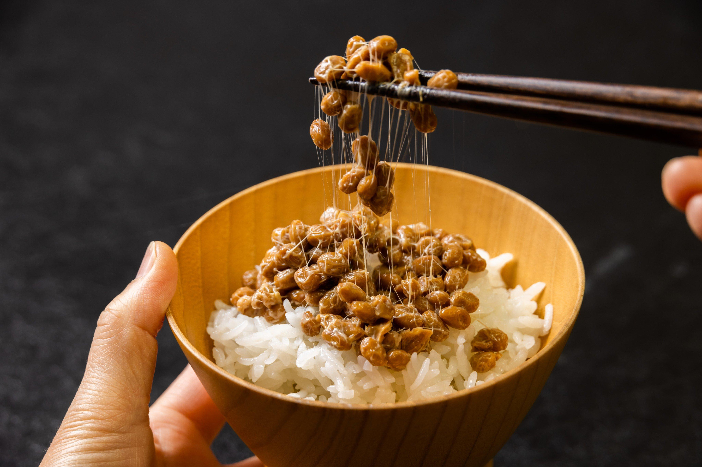
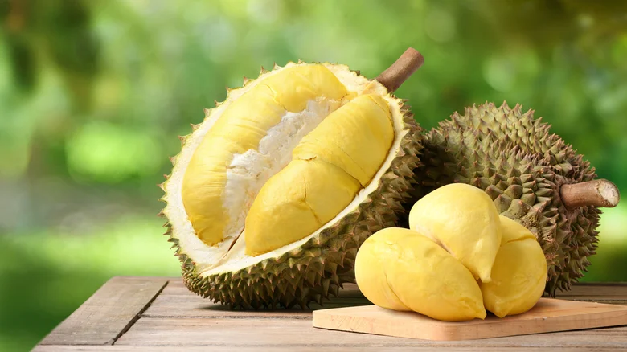
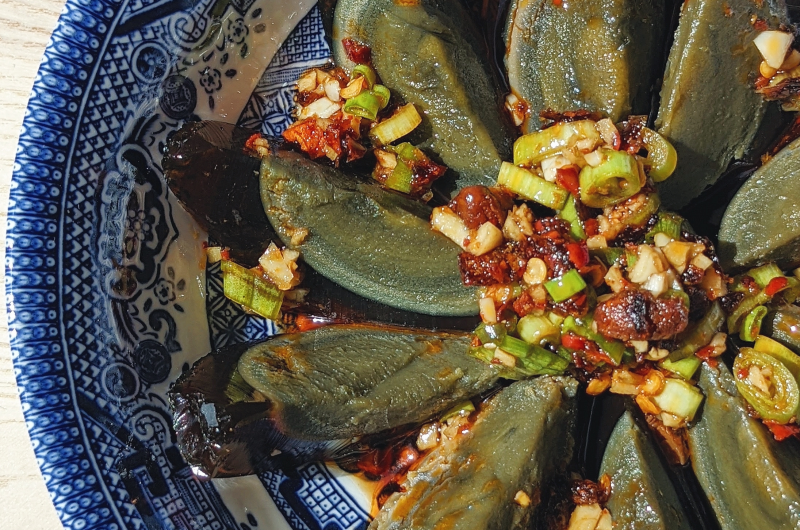
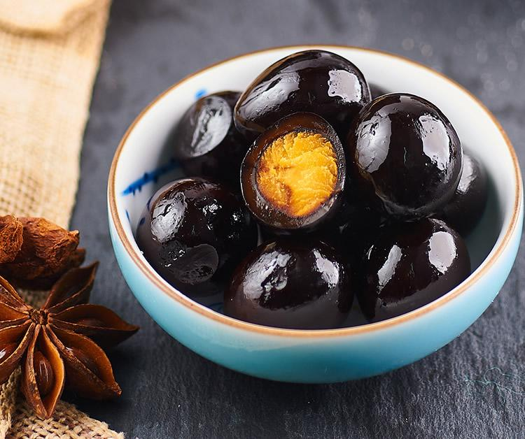

Let me introduce you to some local foods I tried and loved during my travels around Asia. Don’t let the picture of Taiwan’s infamous Godzilla Ramen scare you, though! The foods on this list are much more ordinary—local favourites you might find at a convenience store or local eatery around the corner, even if they seem rather unusual back home in Australia or New Zealand... unless you know where to look. 😉

Chicken Feet - 📍Cantonese/Southern China
What is it?Chicken feet typically deep-fried, braised and steamed until tender, often served with a savoury sauce.
My TakeI’ll start the list with a staple of dim sum cuisine: chicken feet! You’re mainly eating the skin, which puffs up and soaks up all that sauce as it cooks. Soft, sweet and savoury!

Gyutan (Beef tongue) - 📍Sendai, Japan
What is it?Sliced beef tongue, usually seasoned and grilled over charcoal. Sendai Specialty Since 1948
My TakeOnce you get past the fact that the steak can technically taste you back, this is basically a chewier version of steak. It still has all that meaty goodness and is surprisingly juicy, despite looking like it should just be a tough lump of muscle.

Paru Goreng (Fried Lungs) - 📍Indonesia
What is it?Beef lung that's seasoned, cooked and fried until crisp on the outside.
My TakeThere are plenty of ways to prepare lungs, but the simple deep-fried version I had back in my home country of Indonesia was perfect as is! It can be an acquired taste, though, thanks to its rather peculiar taste and texture.

Natto - 📍Japan
What is it?Fermented soybeans famous for their sticky, stringy texture and strong, distinctive aroma.
My Take“Pour soy sauce and mustard over the stinky beans, then mix them until they’re slimy, gooey and bubbly” might not sound particularly appetising, but served over a fresh bowl of rice, it becomes one of the most comforting foods on this list! Commonly eaten as a quick breakfast, it’s a humble Japanese staple that’s also packed with nutrients.

Durian - 📍Southeast Asia (primarily Thailand/Malaysia)
What is it?A large, spiky tropical fruit with rich, creamy flesh and an extremely distinctive smell.
My TakeDubbed the “King of Fruits,” ye who dares brave the smell shall be rewarded with the rich, creamy and sweet flesh of this golden fruit. It’s probably the most polarising fruit—you either hate it or love it. And I freaking love it.

Century Egg - 📍China
What is it?Eggs preserved through an alkaline curing process that transforms the white into a dark jelly and the yolk into a rich, creamy centre.
My TakeYou might've heard this one before, just like its name suggests, the "1000-year old egg" or "century egg" looks equally rotten where the egg whites turn black and translucent and the yellow turns murky grey-green. But it is a savoury bomb of creamy goodness, especially lovely when paired with congee.

Iron Egg - 📍Taiwan
What is it?Small eggs repeatedly braised in a spiced soy mixture and dried, giving them a dark colour and dense, chewy texture.
My TakeSurprise! The last item on this list is yet another egg. I had the quail egg version of the iron egg, but this is by far the least egg-like of the bunch. The outside is tough and almost plastic-y—I’d even go as far as saying there’s a slight crunch when you bite into it.